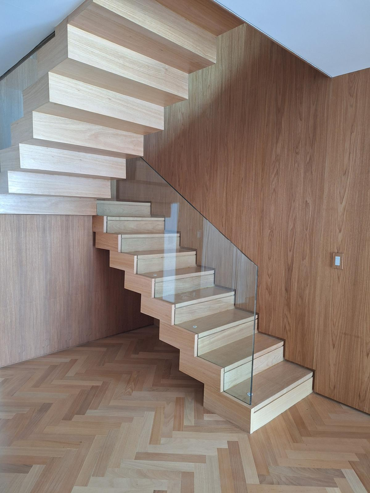
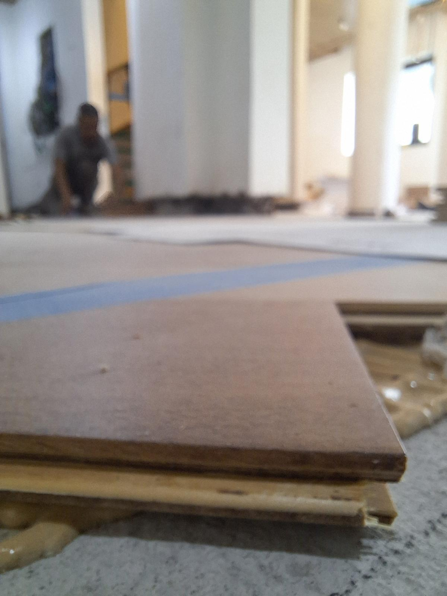

Etapa 1 de 7
Vistoria pré-obra
Medição do ambiente, leitura do projeto e dos encontros. A paginação técnica nasce aqui, com o eixo definido junto com você.

Barra Nobre para quem especifica
Estúdio de paginação
Produtos reais dos catálogos Masterpiso e Indusparquet 2026, com as medidas de fábrica. Troque a essência, a paginação e o sentido das peças, arraste o corte para comparar com o contrapiso e passe o dia inteiro no ambiente, da luz da manhã ao fim de tarde. A ficha técnica e a quantidade aproximada saem prontas para o cliente.
Simulação ilustrativa feita em código, não é foto de obra. Tom e veio variam peça a peça na madeira natural; a aprovação final é com amostra física, no showroom ou no seu escritório.
Fotografe o ambiente vazio, com o piso aparecendo inteiro.
A foto fica só no seu navegador. Depois, arraste os quatro pontos até os cantos do piso e a madeira entra respeitando a perspectiva e as sombras da foto.
Prévia ilustrativa sobre a sua foto. Móveis sobre o piso ficam cobertos; para a leitura fiel, o especialista leva as amostras.
O botão abre o WhatsApp da Barra Nobre, (21) 98635-3615, com a ficha das opções guardadas já escrita.
O que trava a especificação
“Se der errado, quem perde o cliente sou eu.”
Quando o piso dá certo, ele some dentro do conjunto e o elogio vai para o projeto inteiro. Quando dá errado, vira a única coisa que o cliente enxerga, todo dia, na área maior da casa. Por isso a mesma empresa especifica com você, fornece e instala com equipe própria, do primeiro contato ao Termo de Entrega.
“Se o acabamento atrasar, atrasa o habite-se.”
O piso é a última etapa antes da chave. Madeira valoriza a unidade, isso a incorporadora já sabe. O que ela precisa é de um cronograma que só fecha depois da vistoria e de um mesmo protocolo em todas as unidades: a 1.204 recebe o mesmo processo da 101.
Catálogo com medidas
Mais de 170 referências de piso e deck dos catálogos 2026. As marcadas com “Medidas no Estúdio” têm espessura, largura e comprimento de fábrica e entram direto na simulação. As demais abrem a ficha do fabricante e a Barra Nobre confirma medidas e disponibilidade.
As amostras do catálogo são texturas ilustrativas geradas por cor de referência. A cor fiel está na amostra física e na ficha do fabricante.
Diagnóstico do projeto · 2 minutos
Sete perguntas sobre fase, aplicação e condição do local. No fim, você recebe a construção indicada, a paginação para testar no Estúdio e os pontos que a vistoria vai olhar primeiro. Se quiser, a ficha segue para o especialista pelo WhatsApp.
Aula · Da prancheta à obra
Não é argumento de venda. É o que a nossa equipe encontra em obra, e vale mesmo que você feche com outro fornecedor. Os valores técnicos são referências de mercado; em cada obra, manda a ficha do fabricante e a medição da vistoria.
Processo
Medição do ambiente, leitura do projeto e dos encontros. A paginação técnica nasce aqui, com o eixo definido junto com você.
Umidade, planicidade e resistência medidas antes da madeira chegar. O que precisa de correção vai por escrito para a obra.
Confirmação das correções e das cotas finais. Só depois dela o cronograma é fechado.

O prazo que a Barra Nobre assina é o que a própria equipe executa. A madeira chega e aclimata no ambiente antes de ser instalada.

Padrão europeu de instalação, seguindo a paginação aprovada. Quem vende é quem instala, e quem instala responde pela obra.
Sobras e embalagens saem da obra com a equipe. O piso fica protegido até a entrega.

Conferência com você e com o cliente, orientação de manutenção e garantia de 5 anos. Se algo aparecer, volta a equipe que conhece aquela obra por dentro.
Obras
Fotos reais de obras recentes, feitas no canteiro pela nossa equipe.
Perguntas de quem especifica
Sim. A mesma empresa especifica com você, fornece e instala, com equipe própria e padrão europeu. É um só responsável do primeiro contato ao Termo de Entrega.
Sim. Piso, degraus e espelhos de escada, painéis de parede e forro em madeira de verdade. Para área externa, deck de teca. A escolha da construção muda conforme a aplicação, e a vistoria define a fixação.
Depende da base, da umidade e do uso. Multiestruturado tem mais estabilidade dimensional e é o indicado para piso aquecido e para obras com pouca altura disponível. O maciço permite mais raspagens ao longo da vida do piso. O capítulo 1 da aula explica a escolha.
Sim. O cronograma considera as regras do condomínio, horários de ruído e acesso. Em condomínio, a manta acústica sob o piso entra na conversa desde a vistoria.
Sim. Trabalhamos com fabricantes de manejo certificado e documentação de origem. A ficha de cada produto acompanha a proposta.
No showroom, no CasaShopping, na Barra da Tijuca, ou com o kit de amostras levado ao seu escritório. A aprovação de tom e veio é sempre com amostra física.
Obra com final feliz
Envie o projeto ou o orçamento. Você recebe uma resposta técnica, não um catálogo.